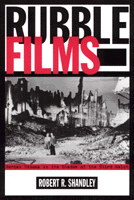

An insightful analysis of German film in the immediate postwar era
An insightful analysis of German film in the immediate postwar era


 An insightful analysis of German film in the immediate postwar era
An insightful analysis of German film in the immediate postwar era

|  |
Rubble FilmsGerman Cinema in the Shadow of the Third ReichRobert R. Shandleypaper EAN: 978-1-56639-878-7 (ISBN: 1-56639-878-9) |
Outstanding Academic Title, Choice, 2002
"[Rubble Films] will certainly come to stand as an important book on an unwritten chapter in the history of postwar German cinema.... [I]t also contributes to the specific analysis of culture as an apparatus of historical memory in postwar Germany, and does so in illuminating and intriguing ways."
—Lisa Saltzman, Department of History of Art, Bryn Mawr College
At the end of World War II, Germany was a broken nation. Split in two and occupied by the victorious Allies, it would have to be rebuilt, literally, from the rubble of its own defeat. Volumes of books have been published chronicling its structural and economic rebirth; this unique study reveals how Germany rebuilt itself culturally.
Rubble Films is a close look at German cinema in the immediate postwar era, and a careful examination of its relationship to Allied occupation. Shandley reveals how German film borrowed—both literally and figuratively—from its Nazi past, and how the occupied powers (specifically the US) used its position as victor to open Europe to Hollywood movie products and aesthetics.
Incorporating a careful reading of several important postwar films, Shandley also discusses how the German studio system operated immediately after the war, in the east and the west, giving special focus on DEFA, the east German studio that rose during Soviet occupation.
Pathbreaking in its research, Rubble Films sheds new light on a significant moment of German cultural rebirth, and adds a new dimension to the study of the history of film.
Excerpt available at www.temple.edu/tempress
"Rubble Films is a deft and perceptive study of the most overlooked period in German film history. Superbly researched and written, this complex tale of German film culture illuminates, at times brilliantly, the much larger story of East and West Germany in the shadow of World War II."
—Timothy Corrigan, author of New German Film: The Displaced Image and The Films of Werner Herzog: Between Mirage and History
"His study deftly combines descriptive and analytic treatments of individual films, with a cogent reconstruction of their historical context."
—German History
"A primary strength of the bok is its breadth: Shandley provides a useful survey of the rubble film that addresses a wide range of genres...in doing so, he never loses sight of his analysis of the representation of history in these films."
—Colloquia Germanica
"Shandley extensively mines German secondary sources to flesh out the fascinating picture of the "rubble films" first produced in the late 1940s....Shandley's book presents a clear argument and critical evaluation of these early film initiatives."
—Choice
Read a review on Gadfly online, 22 October 2001.
Read a review from German Studies Review, Volume 25.2 (2002), written by Jaimey Fisher (pdf).
Read a review from Monatshefte, Volume 94.4 (2002), written by Yogini Joglekar (pdf).
Acknowledgments
Introduction
1. Dismantling the Dream Factory: The Film Industry in Berubbled Germany
2. Coming Home through Rubble Canyons: The Murderers Are among Us and Generic Convention
3. It�s a Wonderful Reich: Private Innocence and Public Guilt
4. The Sword That Smote You: Jewish Filmmakers and the Visual Reconstruction of Jews in German Film
5. The Trouble with Rubble: DEFA�s Social Problem Films
6. Comedic Redemption and the End of Rubble Film Discourse
Conclusion: The Vanishing Rubble Film in Postwar Historiography
Notes
Selected Bibliography
Filmography
Index
 | Robert R. Shandley is Assistant Professor in the Department of Modern and Classical Languages at Texas A&M University, and editor of Unwilling Germans? The Goldhagen Debate. |
Cinema Studies
Mass Media and Communications
History
© 2015 Temple University. All Rights Reserved. This page: http://www.temple.edu/tempress/titles/1593_reg.html.